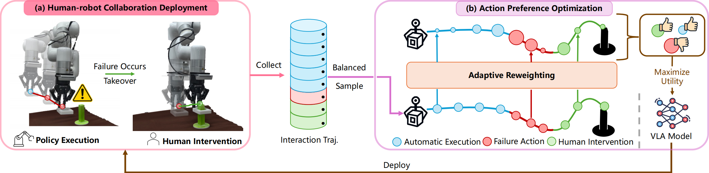

Figure 1: Our pipeline for action preference optimization.
Ensuring safe interactions in unconstrained environments while fostering continuous improvement is crucial for the development of robust robotic manipulation systems in real-world scenarios.
Benefiting from the capacity for generalizable reasoning and scalable learning, Vision-Language-Action (VLA) models have been widely recognized as the foundation model for such robotic deployment systems.
However, their performance in achieving high field-ready success rates in unconstrained, unpredictable real-world environments remains a significant limitation.
This discrepancy presents a key challenge: how to integrate these developing Vision-Language-Action models into practical scenarios?
To enable reliable deployment and stable learning from interactions, we propose the Action Preference Optimization method named APO, for autoregressive VLA models.
This method integrates two critical components: the human-robot collaboration framework for reliable deployment, and the action preference optimization process for iterative improvement of VLA models.
As shown in Figure 1(a), the human-robot collaboration deployment framework allows real-time human interventions during policy execution, ensuring reliable task completion when the robot encounters challenging situations.
To mitigate the proportion imbalance of corrective action, we propose a balanced sampling method to provide proportional representation of interaction data for further VLA preference optimization.
As shown in Figure 1(b), we introduce the action preference optimization process to fully leverage the sub-optimal interaction trajectories for stable VLA models optimization, which helps avoid failure actions and encourages the adoption of corrective actions.
Through iterative human-robot collaboration deployment and action preference optimization process, our method can continuously enhance the VLA model's capabilities via environment interaction, ensuring sustained improvements in performance and adaptability to dynamic downstream manipulation tasks.